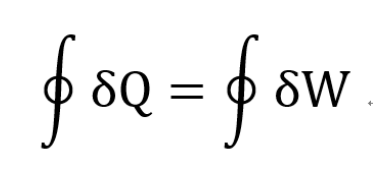
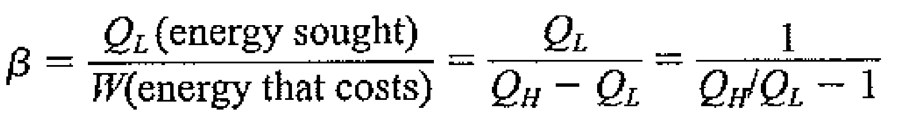
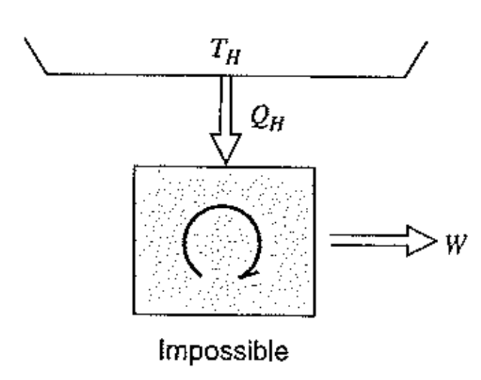
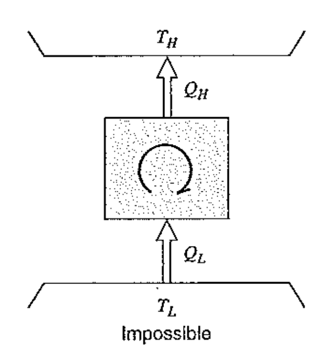

[Thermodynamics] Ch 5. Kelvin plank, Clausius Statement.
이제 두번째, 열역학 제 2법칙에 대해서 알아보자.
지금까지는, 열역학 제1법칙 에너지가 어떻게 보존되고,
열과 일의 흐름에 따라서 내부에너지,엔탈피 변화에 대해서 알아보았다.
열역학 제 1법칙

위식이 말하는 것은, 열을 이용해서 일을 하는 싸이클을 만들 수 있다는 말 아닌가??
정답: Heat engine
![[Thermodynamics] Ch 5. Kelvin plank, Clausius Statement.](./images/img-002.png)
위 그림처럼, Boiler, Condenser에서 열교환이 서로 일어나고,
그 차이만큼 일을 Turbine에서 밖으로 내뿜는 cycle을 만들 수 있다.
위 Heat engine의 열효율은?
output/input = 효율이므로,
![[Thermodynamics] Ch 5. Kelvin plank, Clausius Statement.](./images/img-003.png)
반대로, 일을 통해서 열을 빼앗고 싶은 경우는?
정답: Refrigerator cycle.
![[Thermodynamics] Ch 5. Kelvin plank, Clausius Statement.](./images/img-004.png)
여기서도 효율은 똑같이
output/input

여기서 두 Heat engine과 refrigerator cycle에는 규칙이 있다.
바로.
1. Kelvin-Plank statement
Cycle에서 무조건 Heat reservior은 두개이어야 한다.

즉 Heat engine 에서 효율 = QH-QL/QH = QH/QH = 1 = 100%인 상황은
불가능하다 라는 것.
2. Clausius statement
일 없이 TL -> TH로 열이 이동 할 수 없다.

즉 refrigerator cycle 에서 효율 = QL/QH-QL = QL/0 = infinity -> 불가능
둘다 결국 효율이 100%인 상황은 불가능 하다는 것을 암시한다.
책에서는 위 법칙을 통해서
3가지 사실
을 확인 할 수 있다고 언급한다.
1. 경험적으로 증명되었다. 100% 효율 cycle못 만든다.
2. 서로 똑같은 명제라는 것,
즉 둘중 하나를 반박하면 나머지가 자동으로 반박된다.
![[Thermodynamics] Ch 5. Kelvin plank, Clausius Statement.](./images/img-008.png)
위 사진에서, Clasius 명제를 부정한 Left engine이 존재한다고 가정해보자.
(오른쪽 엔진은 법칙 만족하는 엔진)
이제, Cycle system 설정을 두개의 engine + Low T reservior으로 그림과 같이 설정하면,
하나의 reservior으로 Work을 생산함을 알 수 있다.
즉, Kelvin- Plank statement 를 어기는 cycle이다.
3. Perpetual - motion machine 제작이 불가능하다라는 것을 암시.
Perpetual - motion machine이란 heat -> work 100% 전환 가능한 장치이다.